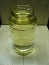

gasoline

Has synonym(s): oil
Definition: Gasoline (US, CA; ) or petrol (CW except Canada; ) (see § Etymology) is a transparent, slight yellowish petroleum-derived flammable liquid that is used primarily as a fuel in most spark-ignited internal combustion engines (also known as petrol engines). It consists mostly of organic compounds obtained by the fractional distillation of petroleum, enhanced with a variety of additives. On average, U.S. refineries produce, from a barrel of crude oil (42 US gallons or about 159 liters), about 19 to 20 gallons of gasoline; 11 to 13 gallons of distillate fuel (most of which is sold as diesel fuel); and 3 to 4 gallons of jet fuel. The product ratio depends on the processing in an oil refinery and the crude oil assay.The characteristic of a particular gasoline blend to resist igniting too early (which causes knocking and reduces efficiency in reciprocating engines) is measured by its octane rating, which is produced in several grades. Tetraethyl lead and other lead compounds, once widely used to increase octane ratings, are no longer used except in aviation, off-road and auto-racing applications. Other chemicals are frequently added to gasoline to improve chemical stability and performance characteristics, control corrosiveness, and provide fuel system cleaning. Gasoline may contain oxygen-containing chemicals such as ethanol, MTBE, or ETBE to improve combustion.
Source: Wikipedia
Wikipedia Page (Something wrong with this association? Let us know.)
Wikidata Page (Something wrong with this association? Let us know.)
Occurs in: